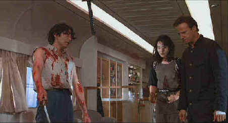

|
Hunted,The/B+,A- |
|
Universal/1995/111m/ANA
1.85 |
Quick. As fast as
a blazing Samurai sword, answer the question: Who is J. F. Lawton? He’s the guy who
directed the fast-paced Samurai fusion flick The Hunted. He also wrote
Pretty
Woman and the excellent Steven Segal actioner Under Siege. Lawton invests his
scripts with well-drawn characters, little fat and lots of color. The Hunted is no
exception and this time out Lawton is also the director.
The set-up is economical. An American businessman in Nagoya,
Japan meets a beautiful Japanese woman in a bar. Their reflections connect through the bar
mirror and within a few beats of the drums they are romancing during a Kodo Drums concert
in the park. While the two soon-to-be lovers ignite sparks, another scene is playing
itself out as black garbed Ninjas infiltrate a high rise building. It’s the hotel
where businessman Paul Racine will make love to Japanese beauty Kirina in her opulent
Japanese style suite. Lawton films and inter-cuts the opening scenes with the precision of
an old pro and the flair of a well-studied movie lover.
The Hunted reaches its final moments in a battle
reminiscent of Enter the Dragon and other martial arts movies of that ilk. On the
way, Racine’s romance with Kirina will be cut short, blood will flow through a Bullet
Train like a river of Vodka in a busy bar, and a century old feud will be resolved in the
shadows of a family castle.
To be sure, there are holes in the plotting and violations of
logic, but they can be ignored without destroying the relentless nature of the film. How
could the Ninjas fail to kill Racine the first time? Bad poison? Can Joe Businessman learn
to wield a Samurai sword with expertise after a few short weeks? Yes, if he has experience
brandishing Highlander swords. Never mind. The swordplay is dynamic, the characters
consistent, and the production concentrated and polished. The film even intersperses its
humor particularly well. In the tradition of many serious Japanese Samurai movies, humor
is provided from a supporting character, in this case a master swordsmith.
 |
Is this Kinjo?. ©Universal |
Christopher Lambert is
well-suited (in Armani) to his role as Paul Racine. Lambert romances Joan
Chen (Kirina) in
convincing style. John Lone is better than usual as Kinjo, the ruthless leader of the
Ninja cult. While Lambert is the central figure, he doesn’t do most of the fighting.
That’s left up to Japanese film veteran Yoshio Harada playing Takeda, providing ample
style as sharp as the blade of a well-honed Samurai instrument of death. He’s
no-nonsense in his swordplay. The man conducts business on the great bullet train sequence
with consummate dispatch. Yoko Shimada is beautiful and loyal as Takeda wife, who pulls a
mean bow.
The Hunted has been turned into a ravishing DVD. The
preponderance of nocturnal scenes suits the medium well. Velvet blacks dominate brightly
transferred night sequences. Detail is consistently sharp on this anamorphic transfer.
There isn’t the slightest hint of over-enhancement. Color levels are outstanding.
Reds against dark backgrounds are dramatic and perfectly contained. The pounding drums
that dominate the Dolby 5:1 soundtracks lends powerful support to the deftly cut action.
Though not very aggressive, overall the surround mix embellished The Hunted with
requisite power.
|
| The Feature
Archive has articles ranging from Akira
Kurosawa to Blonde
Bimbos, The
Heistmasters and John
Ford.

Click on the image of for a
visit with some the screen's dizziest dames.
|
|
HOT
LINKS
National
Preservation Film Board
Learn about what this organization is doing to
preserve our film heritage. Want to know the
guidelines for proper handling of film? This is the
place.
Imaging
Science Foundation
The Imaging Science
Foundation promotes proper standards in home theater
viewing. ISF trained technicians offer monitor
calibration services to consumers. The difference in
a properly calibrated monitor can be
astounding. Click on the image to find an ISF member
near you.
|
|
Home Theater Reference Reviewing
System

When you read a DVD review it's of utmost importance to
know what equipment is being used to evaluate quality.
Click on the projectors to find out more. |
|